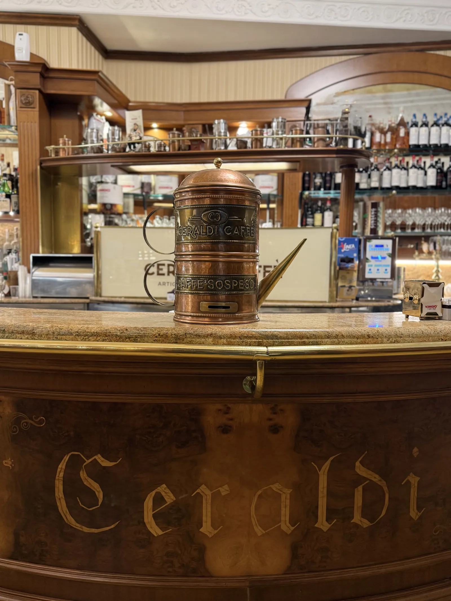

Caffè sospeso in Naples: what it is, how it works and where it comes from
You pay for one coffee more, for someone who will walk in later and could not afford it. At Ceraldi, in Piazza Carità, the caffè sospeso has a home: a copper coffee pot on the counter.

The caffè sospeso is simple: you walk into the bar, pay for two coffees and drink one. The other stays “suspended”: paid for, waiting for someone who will come in later and could not afford it. Nobody knows who offered it, and nobody has to say thank you.
What is a caffè sospeso?
A caffè sospeso (“suspended coffee” in English) is a coffee paid for in advance by a customer, for a stranger who will arrive later. It is a custom born in the bars of Naples and it has become a symbol of Neapolitan solidarity: an anonymous, small, everyday gesture. The Italian newspaper Avvenire described it as an act of attention towards a stranger, not as charity.
How it works at Ceraldi: the copper coffee pot
On our counter at Piazza Carità 14, the caffè sospeso has a place of its own: a large copper coffee pot with two inscriptions, “Ceraldi Caffè” and “Caffè sospeso”. This is how it works:
- To leave a caffè sospeso, you pay for one coffee more and drop the receipt into the coffee pot.
- To receive a caffè sospeso, anyone who needs one takes a receipt from the coffee pot and receives, at the counter, a coffee that has already been paid for by a person they will never meet.
The receipt keeps the gesture simple and transparent: every suspended coffee in the pot is a coffee that has really been paid for, and whoever takes one does not have to ask anybody for anything. You can leave one even if you are in Naples for just a few days: it is one of the most Neapolitan ways to spend time in a bar.
Where it comes from
The exact origins are not documented and the stories differ. It is often said that the custom spread in the city's poorest years, when many people could not afford even a coffee, but no source dates it with certainty. The writer Riccardo Pazzaglia, in his book Odore di caffè (2004), gave a lighter explanation: when it was time to pay, among friends at the counter, it could happen that someone settled one coffee too many, and instead of claiming it back they left it to a stranger.
It was Luciano De Crescenzo who made it famous outside Naples: in 2008 he collected anecdotes and reflections on the subject in the book Il caffè sospeso. For him it was the gesture of someone who is happy and wants, somehow, to offer a coffee to the rest of the world.
10 December: the day of the caffè sospeso
In autumn 2010 a number of Italian cultural festivals created the Rete del caffè sospeso (the “suspended coffee network”), from an idea by Maurizio Del Bufalo, founder of the Human Rights Film Festival in Naples. The network chose 10 December, International Human Rights Day, as the day of the caffè sospeso, with the support of the mayor of Naples, and invited bars across Italy to take up the custom again.
Every year, 10 December is the ideal day to leave a suspended coffee. But the coffee pot on our counter is there all year round.
From the Neapolitan bar to the rest of the world
Over the years the idea has travelled far. The caffè sospeso has been taken up in other Italian cities and in several countries, from Europe to the Americas: in English it is called suspended coffee, in Spanish-speaking countries café pendiente. In Argentina the same principle has also been applied to empanadas.
Just as the world was discovering it, in Naples some people thought it had disappeared. That is why it matters that it stays visible, on the counter, where everyone can see it and understand how it works.
Why it lasts
The caffè sospeso works because it is small: it costs little, it needs no organisation and it embarrasses nobody. It is the same spirit as the Neapolitan bar, where coffee is first of all a chance to be among other people. To understand this ritual better, you can also read (in Italian) how coffee is drunk in Naples, the other Neapolitan traditions and the story of Piazza Carità and Via Toledo, where you will find us.
Frequently asked questions
What is a caffè sospeso?
It is a coffee paid for in advance by a customer of the bar, for a person who will come later and could not afford it. It is a custom born in the bars of Naples: whoever offers it stays anonymous, and whoever receives it does not have to thank anyone.
How do I leave a caffè sospeso at Ceraldi?
You pay for one coffee more and drop the receipt into the large copper coffee pot marked “Caffè sospeso” on the counter of Ceraldi Caffè, Piazza Carità 14, Naples.
How do I receive a caffè sospeso?
Anyone who needs one takes a receipt from the coffee pot and receives, at the counter, a coffee already paid for by someone else.
When is the day of the caffè sospeso?
On 10 December, together with International Human Rights Day. It was chosen by the Rete del caffè sospeso, created in 2010 from an idea by Maurizio Del Bufalo.
What is a caffè sospeso called in English?
In English it is called “suspended coffee”; in Spanish-speaking countries “café pendiente”.